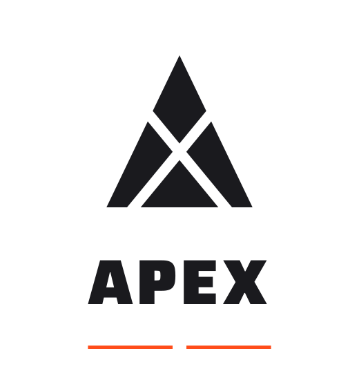
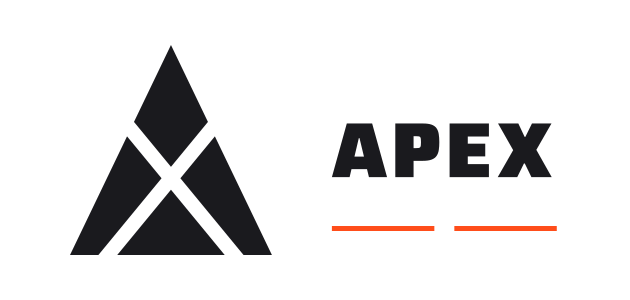
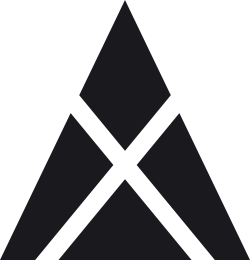

A precisão de um ápice: onde a engenharia converge em movimento.
O símbolo nasce do cruzamento geométrico de dois vetores que se encontram num único ponto — o ápice. A malha recortada em negativo revela o X de APEX e, ao mesmo tempo, as linhas de força que convergem em qualquer sistema mecânico: torque, trajetória, tolerância de corte. Sem engrenagens, chaves ou pistões — só geometria pura, como uma peça usinada à milésimos. A Saira, de corte técnico e industrial, reforça o caráter europeu e confiante da marca; o laranja elétrico aparece só onde a energia precisa ser sentida.

Use a versão vertical como padrão. A horizontal serve para espaços largos e baixos (cabeçalho de site, fachada); o símbolo isolado, para espaços pequenos ou quando a marca já foi apresentada.


Para carimbo, gravação, bordado, impressão em uma cor e fundos fotográficos ou coloridos.